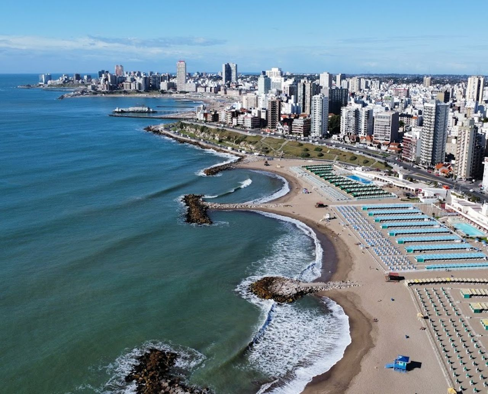
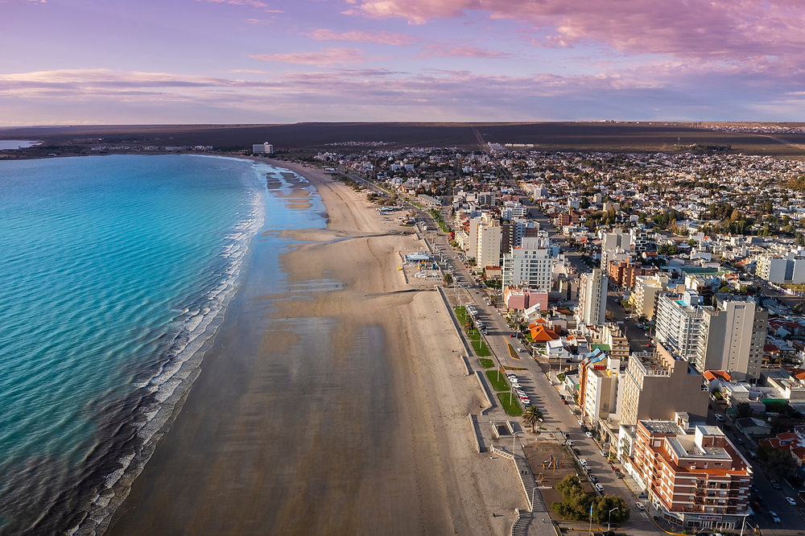
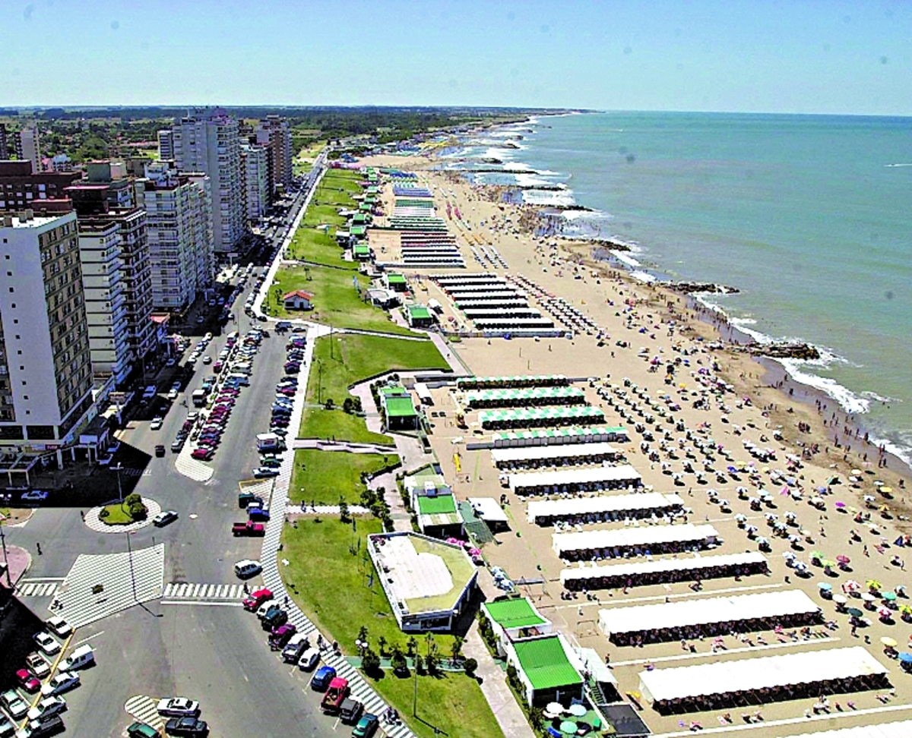
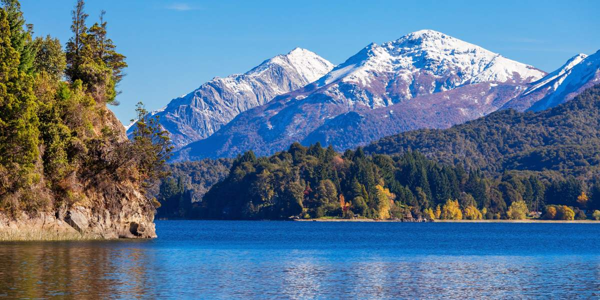
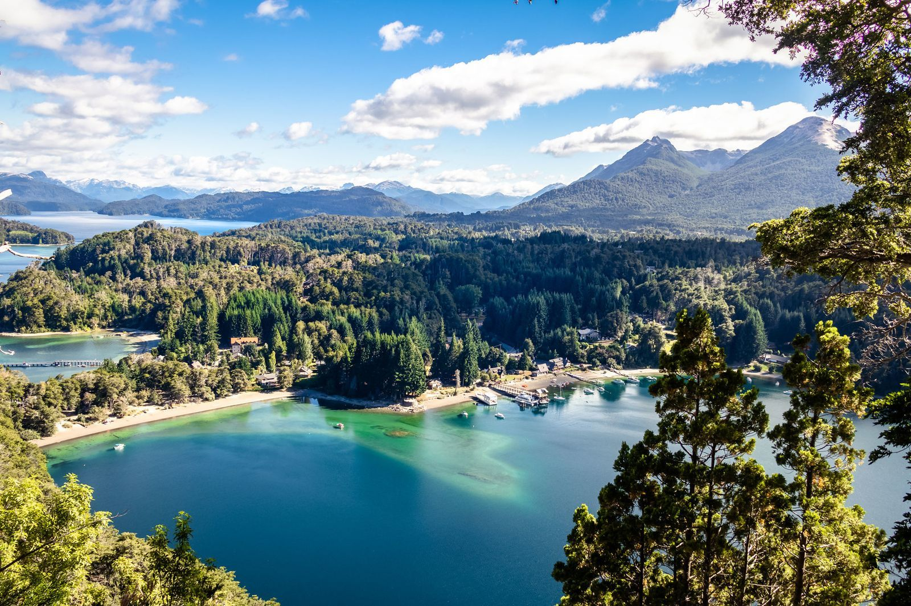
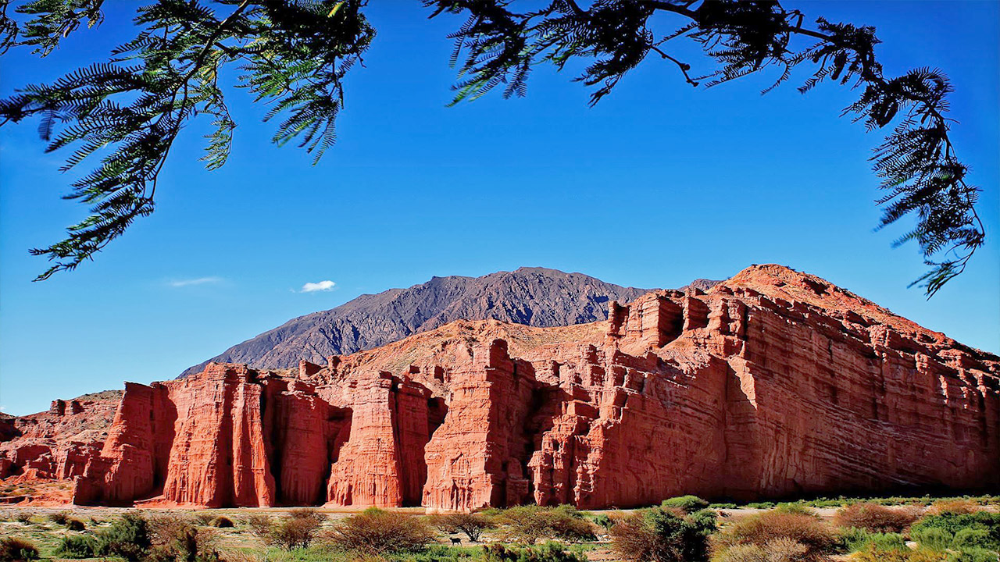

Mar del Plata
Una de las ciudades costeras más conocidas de Argentina, ideal para descansar, caminar por la costa y disfrutar de su vida cultural.
Descargar itinerarioPromoción de playas y montañas reales para tu próximo viaje
Elige una categoría para ver sus destinos y descarga tu itinerario de viaje.
Selecciona una categoría para visualizar los destinos disponibles.

Una de las ciudades costeras más conocidas de Argentina, ideal para descansar, caminar por la costa y disfrutar de su vida cultural.
Descargar itinerario
Destino patagónico famoso por sus aguas tranquilas, fauna marina y excursiones de avistaje de ballenas.
Descargar itinerario
Playa tranquila y familiar, con extensas costas, paseos relajados y un ambiente ideal para vacaciones serenas.
Descargar itinerario
Reconocido por sus paisajes andinos, lagos y centros de esquí. Es uno de los destinos de montaña más emblemáticos del país.
Descargar itinerario
Rodeada de bosques, montañas y lagos, combina naturaleza, tranquilidad y una experiencia turística de gran belleza.
Descargar itinerario
Ubicado entre cerros y valles, ofrece paisajes únicos, cultura regional y rutas escénicas impresionantes.
Descargar itinerarioEste sitio es mantenido por un equipo dedicado a la difusión turística, con el objetivo de mostrar destinos reales de forma simple, clara y accesible.